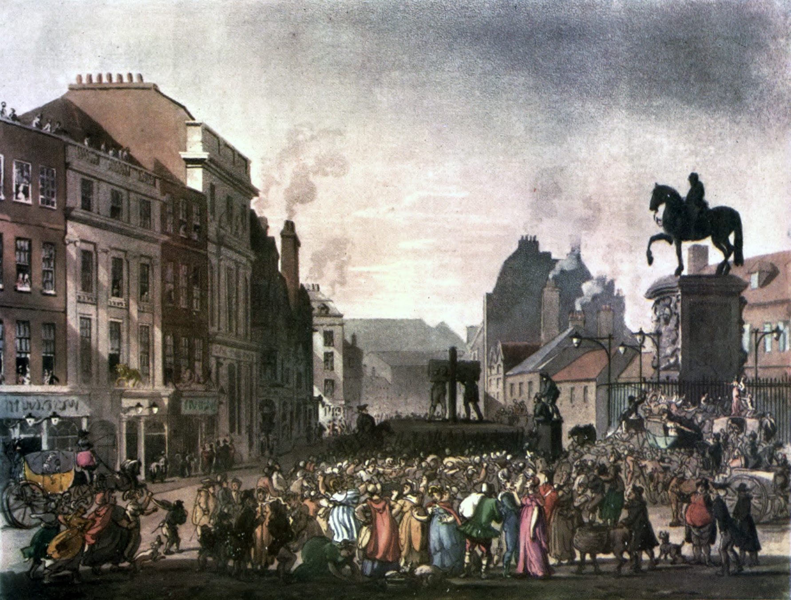
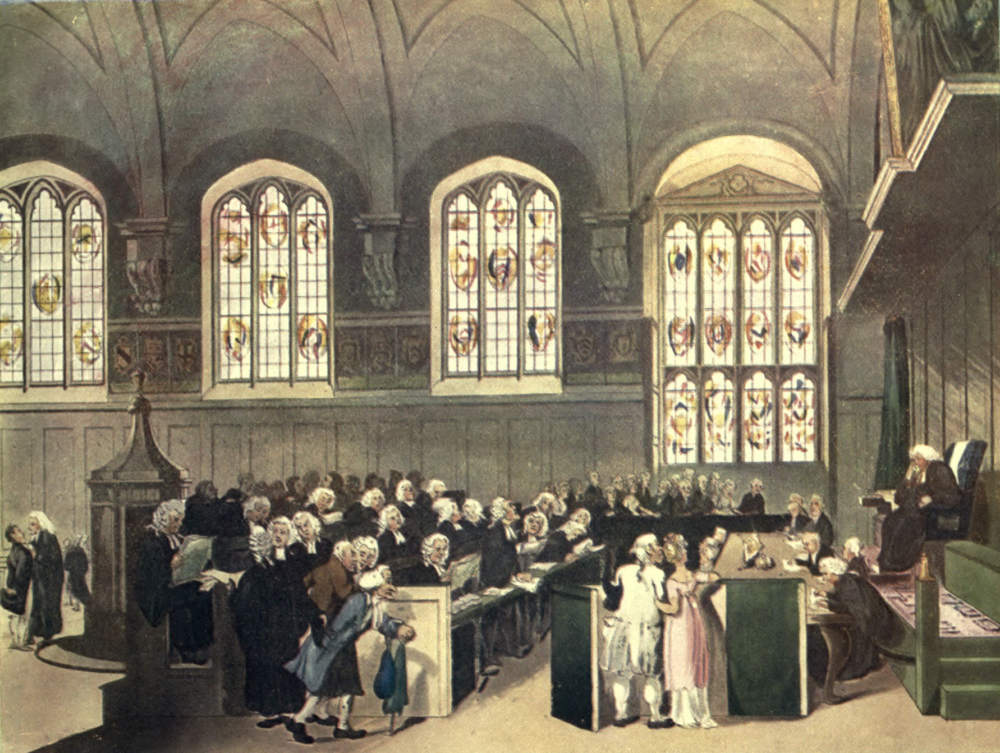

Durkheim, De la division du travail social (The Division of Labour), Book I, ch. II, La solidarité mécanique ou par similitudes, and ch. III, La solidarité due à la division du travail ou organique (1893)
💡 CONTEXT
Durkheim’s doctoral thesis opens with a moral puzzle. Public opinion in the 1890s praised the specialist and distrusted the dilettante, yet it also feared that narrow work shrinks a person. Durkheim refuses to settle the puzzle by appeal to a moralist’s first principle. He first asks what the division of labour actually does for a society. Solidarity, the bond he is after, is an inner state that cannot be observed directly, so he looks for an outward sign of it that can be: law. Chapters II and III read two families of law as evidence for two kinds of bond.
📊 THE ARGUMENT AT A GLANCE
FROM THE KIND OF SANCTION TO THE KIND OF BOND
THE METHODSolidarity is invisible. Law is its visible index. Sort laws by their sanction.
↓
CH. II · REPRESSIVE LAWPenal law. The sanction makes the offender suffer.
↓
WHAT IT PROTECTSStrong and precise states of the collective conscience
↓
MECHANICAL SOLIDARITYA bond of likeness. Strongest where individuality is smallest.
CH. III · RESTITUTIVE LAWCivil, commercial, procedural, administrative law. The sanction restores what was disturbed.
↓
WHAT IT PROTECTSRelations of cooperation between people with different functions
↓
ORGANIC SOLIDARITYA bond of interdependence. Grows as individuality grows.
The share of each kind of law in a legal system indicates which bond predominates in that society.
📖 THE ARGUMENT, SECTION BY SECTION
1
Crime is defined by the reaction it provokes
CLAIMThe bond that penal law guards is the one whose breach counts as a crime, and a crime is any act that draws punishment upon its author. To learn what crime is, ask what punishment answers to.
REASONOffences differ enormously between societies, yet the response to them is everywhere of one kind, varying only in degree. One effect points to one cause. The essential property of a thing is what is present wherever the thing is found, so crimes across all legal systems must share some common element.
EXAMPLEDurkheim surveys offences across many legal systems to show the range of acts that have been punished. The variety of the acts makes the sameness of the reaction stand out.
2
The common element: strong and definite shared sentiments
CLAIMA crime is an act that offends shared states of feeling that are both strong and definite. Strength alone is not enough.
REASONSome deeply felt duties are never prosecuted. Penal rules name a precise act to perform or avoid: do not kill, perform this rite. Duties such as charity or love of one’s parents are general aspirations that cannot be stated as one exact rule, so they vary from person to person and lack the uniformity penal law requires.
EXAMPLEA neglectful son and a thoroughgoing egoist offend real moral feeling, yet neither is treated as a criminal.
3
Naming the thing: the collective conscience
CLAIMThe beliefs and sentiments shared by the average members of a society form a system with a life of its own. Durkheim names this system the collective conscience (conscience collective).
REASONIt has no single organ; it is spread through the whole society. Yet it is a distinct reality. Individuals die and it continues. It is the same in north and south, in large towns and small, across occupations, and it links one generation to the next. It exists only through individual minds, but it is not the sum of any of them.
LIMITIt is not the whole mental life of a society. Specialized functions such as judging, governing, science, and industry are mental activities too, but they lie outside the common conscience. Durkheim keeps the term for the shared core only.

Punishment as a public event: the whole crowd, not just the injured party, turns out to answer the offence. This is the collective reaction Durkheim places at the heart of repressive law. Thomas Rowlandson and Augustus Charles Pugin, 1809. Public domain, via Wikimedia Commons.
4
What punishment is for
CLAIMPunishment does little to reform the offender or to frighten imitators. Its real work is expressive: it reaffirms the collective conscience at the moment a crime has contradicted it, and so keeps social cohesion intact.
REASONA shared belief that is openly violated and met with silence loses force. The community’s reaction shows that the belief still holds. So punishment is aimed chiefly at the law-abiding, whose sentiments it repairs, not at the criminal. This reconciles the two old theories: punishment does defend society, but it defends society precisely by being an expiation.
CONCLUSIONThere is a solidarity that comes from states of conscience common to all members of a society, and repressive law is its outward form. Its force depends on how much of social life the common conscience regulates. This is mechanical solidarity: members cohere by resembling one another, the way the molecules of an inorganic body cohere, with no movement of their own.
5
Restitutive law: a different sanction, a different bond
CLAIMMost modern law does not punish. Its sanction puts things back as they were: a debt is paid, damages are awarded, a void contract is set aside. Such law protects relations between individuals rather than sentiments everyone shares.
REASONBreaking these rules provokes no public outrage, and the community at large does not respond. Specialized bodies do: courts, magistrates, administrators. Some of these rules only keep people apart, as property rights do by forbidding interference with what is another’s. Others express positive cooperation: the law of contract, of commerce, of procedure, of administration. These arise from the division of labour.
EXAMPLEA contract binds two parties who need each other because each does what the other does not. Even this private agreement depends on rules neither party wrote, which the law supplies and enforces.

A civil court: specialists handling disputes over property, wills, and contracts, with no crowd. This is restitutive law, administered by specialized organs instead of the whole community. Thomas Rowlandson and Augustus Charles Pugin, 1808. Public domain, via Wikimedia Commons.
6
Organic solidarity grows with individuality
CLAIMThe division of labour produces its own bond, which Durkheim calls organic solidarity. It resembles the unity of a higher organism, where each organ has its own function and the whole lives only because they differ and depend on each other.
REASONMechanical solidarity is strongest where the individual personality is absorbed into the collective type. Organic solidarity requires the opposite: each person needs a sphere of action of his own. So the two bonds vary in opposite directions. The more specialized a society, the more distinct each member becomes, and the more each depends on all the others.
EXAMPLEThe surgeon and the farmer of Lesson 4.01. Neither can supply what the other does, and the gap between their skills is the source of the bond.
⚖️ THE DISTINCTIONS THAT CARRY THE ARGUMENT
REPRESSIVE / RESTITUTIVEA sanction that inflicts suffering, versus one that restores the prior state of affairs.
STRONG / DEFINITEIntensity of feeling, versus precision of the rule. Penal law requires both.
COMMON / WHOLEThe collective conscience is the shared core of a society’s mental life, not all of it.
EXPIATION / DEFENCERival theories of punishment that Durkheim joins: it protects society because it expiates.
MECHANICAL / ORGANICCohesion by likeness, versus cohesion by complementary difference. Forms of bond, not historical eras: a modern society contains both.
❓ THE STRONGEST OBJECTION
The argument stands on its index. If law reliably mirrors solidarity, then simple societies should have mostly penal law. Later anthropologists and legal historians found that many small societies settled serious wrongs through compensation paid to the injured family, which is restitution, not repression. If that evidence holds, the neat match between kind of law and kind of society weakens, and the claim that history moves from repressive to restitutive law needs more support than Book I gives it.
A second objection asks whether dependence is a moral bond at all. People who need one another through a market may feel nothing for one another. Durkheim saw the danger himself. Book III of the same work treats abnormal forms of the division of labour, among them the anomic form (anomie, from the Greek for without law or norm), in which specialized functions lose the rules that coordinate them. Interdependence alone, he concedes, does not guarantee solidarity.
🎯 FOUR QUESTIONS
Durkheim argues that the division of labour produces solidarity. By what mechanism does specialization create social bonds rather than dissolve them?
What is the collective conscience, and how does its strength vary between simple and complex societies? What does that change imply for law and punishment?
Why does a crime require a sentiment that is definite as well as strong? Test the answer on a duty that is widely felt but never prosecuted.
Durkheim wrote against the view that a modern industrial society could run on contract alone, without shared moral norms. How does his account of restitutive law challenge that view?
✏️ AFTER THE QUESTIONS
▶ Question 1: the mechanism
The mechanism is dependence. Specializing means giving up the ability to meet one’s own needs, and whatever one gives up, someone else must supply. Multiplied across a population, that produces a society whose members cannot live apart, a bond whether or not anyone feels it as one. The bond needs no shared belief, which makes the claim strong and also exposes it: if interdependence were enough on its own, Book III would not need its account of anomie.
▶ Who is punishment really aimed at?
At the upright, the people who did nothing wrong. A shared belief that is openly violated and then met with nothing would quietly lose its force. Punishment is the community declaring, at the moment of contradiction, that the belief still holds. On this account the criminal is almost incidental. One test of the idea: does it explain why people who will never be victims still want to see wrongdoers punished?
➡️ NEXT
1
Lesson 4.02
Optima Academy Online · SOCIOLOGY · Quarter 1 · Text Study
Durkheim, De la division du travail social I.2 to I.3 (1893)